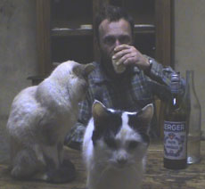

|
L'HEURE DU BERGER
Pierre Creton | F 2008 | 39 Min.
Material: Mini DV
Format: Mini DV
Originalsprache: Französisch
Kamera: Pierre Creton
Schnitt: Pierre Creton
Mit Pierre C., Jean L., Francis L., Marie L., Pierre B., Yves E., Vincent B.
Produktion: Pierre Creton
Großer Preis des Internationalen Dokumentarfilmfestivals FID Marseille 2008
Einladung zum Schäferstündchen. Sieben Jahre nach dem Tod seines Freundes Jean Lambert bewohnt Pierre Creton noch immer dessen Haus auf dem Land. Am Nachmittag scheint die Zeit für einen Moment innezuhalten. Sie macht Platz für Miniaturen voll Dramatik und Humor. Eine Fliege gerät in das Netz einer Spinne. Besuch kommt vorbei. Ein Apéritif wird getrunken. Auf dem Bett liegend wird Paveses "Handwerk des Lebens" gelesen. Nach und nach gesellen sich die Tiere des Hauses dazu.
Pierre Creton, geb. 1966, lebt und arbeitet in Vattetot-sur-Mer, Normandie. Abschluss an der Schule der Bildenden Künste in Le Havre. Seit 1995 arbeitet er regelmäßig auf Milchhöfen, in der Bienenzucht, Milchlaboren und auf den Feldern. Die meisten seiner Dokumentar- und Spielfilme umkreisen essayistisch seine landwirtschaftliche Tätigkeit. Neben seinen filmischen Arbeiten macht er Fotografien und Zeichnungen, die in Galerien ausgestellt und von der Regional Art Collection, Haute Normandie, gesammelt werden.
Filme (Auswahl): L’heure du Berger 2008 | La cabane de dieu 2008 | L’Arc d’Iris – Souvenir d’un jardin (mit V. Barré) 2006 (UNDERDOX 02) | Paysage imposé 2006 | Le voyage à Vézelay 2005 | Détour suivi de Jovan from Foula (mit V. Barré) 2005 (UNDERDOX 02) | Secteur 545 2004 | Une saison, La tournée, La vie après la mort (Kurzfilme) 2002
zurück
|